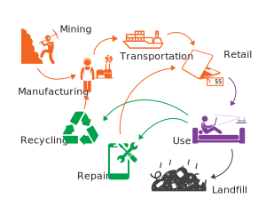

A joule is equal to the energy transferred to an object when a force of one newton acts on that object in the direction of its motion through a distance of one meter.
1 joule is about equivalent to the energy of two heartbeats. Or lifting 100 grams 1 meter. Or the energy released when 100 grams falls 1 meter.
A watt hour is equal to the work done by one watt (1 joule per second) acting for one hour.
1 watt hour is 3,600 joules. Or, the energy to lift 100 grams 3,600 meters. Or, the energy released when 100 grams falls 3,600 meters. That's about the height of 8 Empire State Buildings stacked on top of each other.
The life-cycle of electronic devices includes the mining and processing of natural resources, manufacturing, transport, retail, use, and its reuse, recycling or disposal.
Embodied energy is the energy consumed by all of the processes associated with production: the life-cycle up until the use phase.
This project was created as part of Jasmine Soltani's thesis at ITP.
Icons for the production life-cycle diagram are from the Noun Project. Mining & Factory Worker & Internet Router Wifi by Gan Khoon Lay. Shipping by Alina Oleynik. Laptop by Saeful Muslim. Repair by Leona Grande. Recycling by Nikita Kravchuk. Waste by Marie Van den Broeck